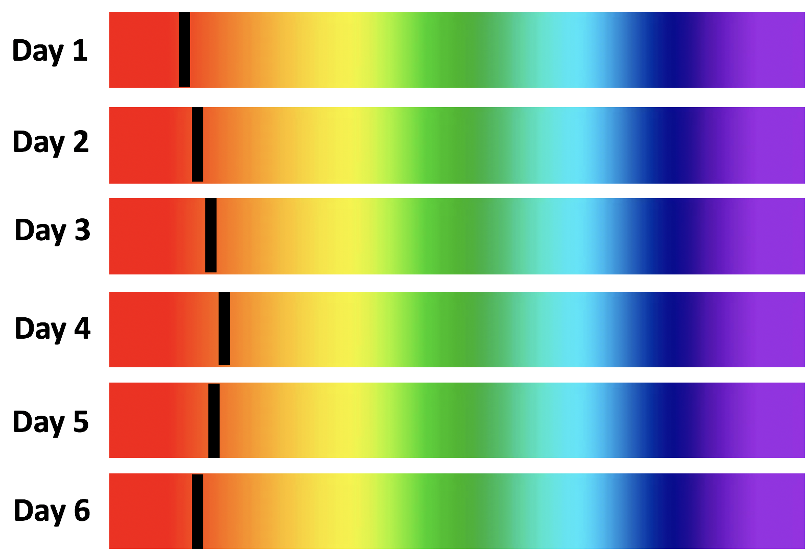

Forrige side🙂 🙁Radiell-hastighetsmetoden
Hvis du ikke helt fikk grepet på spørsmålene på forrige side, spør gruppelærer eller foreleser!.

I figuren ser du spektret av synlig lys. Helt til venstre er rød med bølgelgenden fra λ = 600nm til fiolett på høyreside ned til bølgelende λ = 450nm. (merk størst λ til venstre) Vi ser spektret tatt av en stjerne over 6 dager. Den mørke linjen er en absorpsjonsline, lys som blir tatt opp i atmosfæren til stjernen selv. Vi ser at posisjonen til absorpsjonslinjen endrer seg fra rød til oransje og tilbake mot rød. Dvs. bølgelengden som absorpsjonsliner er på endrer seg.
Det at spektrallinjen går frem og tilbake (λ for linjen blir større og mindre) med tiden er et typisk tegn på at stjerna har en planet i bane rundt seg. Kan du tenke deg hvorfor det er slik? Neste side